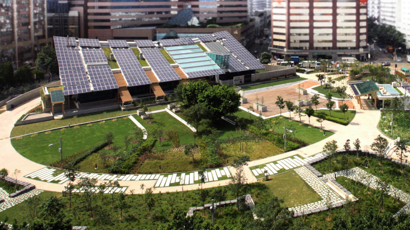
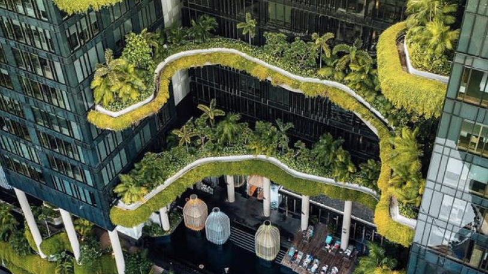
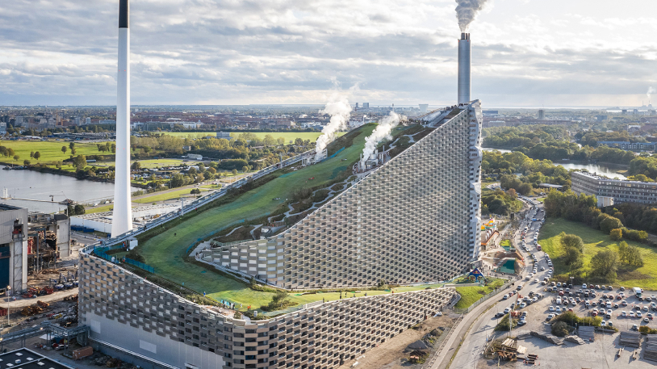
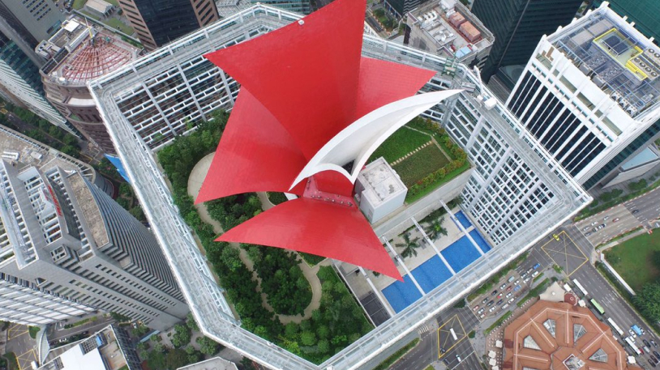

Если раньше единственной функцией крыши была защита здания от внешней среды, то для современных архитекторов это пространство – настоящий повод для творчества и внедрения самых функциональных идей.
Сегодня крыши способны не только обеспечивать здания электричеством, но и насыщать целые кварталы свежим воздухом. А на некоторых из них можно загорать, играть в теннис или даже кататься на лыжах. Показываем пять крыш, которые используют передовые экологические технологии и уже стали объектами современного искусства.
Вращающаяся зеленая крыша в Калифорнийской академии наук — крайне оригинальное изобретение с высокотехнологичным механизмом. Более полутора миллионов лотков с разнообразными растениями создают искусственную среду обитания для местных животных и насекомых.
Кстати, крыша здания поддерживает регулируемую температуру и сохраняет 100% избыточных осадков.
А под семью приподнятыми холмами зеленой крыши находятся аквариумы, планетарий и даже целый тропический лес. Все это открывает возможности для проведения уникальных исследований и изучения дикой природы.
Zero Carbon Building – это первое в Гонконге здание с нулевым выбросом углерода в атмосферу. Его каркас изготовлен из переработанного мусора, а асимметричная крыша, полностью покрытая солнечными батареями, позволяет ему самозатеняться и тратить меньше ресурсов на охлаждение.
Благодаря крыше из фотоэлектрических панелей и тригенерационной системе на биодизеле, ZCB производит больше энергии, чем потребляет, и даже частично обеспечивает этими излишками соседние здания.
Здание Park Royal Tower напоминает вертикальный сад — на высотке смогли уместить больше зелени, чем в соседнем парке. Чтобы поливать все это, на крыше небоскреба установлена система сбора дождевой воды. Там же расположены солнечные батареи — они частично обеспечивают здание электроэнергией и делают его максимально самодостаточным.
Здание Park Royal Tower напоминает вертикальный сад — на высотке смогли уместить больше зелени, чем в соседнем парке. Чтобы поливать все это, на крыше небоскреба установлена система сбора дождевой воды. Там же расположены солнечные батареи — они частично обеспечивают здание электроэнергией и делают его максимально самодостаточным.
Проект Amager Bakke – образцовый пример высокотехнологичного и экологичного здания. Это не просто мусороперерабатывающий завод, а целая электростанция, которая полностью работает на отходах. Вокруг нее расположился природный парк, в самом здании есть центр экологического образования и самая высокая стена для скалолазания в мире, а на крыше — лыжный склон, где летом открываются спортивные и игровые площадки.
40-этажный небоскреб CapitaGreen спроектировал лауреат Притцкеровской премии Тойо Ито. Он решил отойти от традиционного дизайна офисных зданий и вернуть пышную зелень в центр Сингапура.
На трех уровнях здания расположены «небесные сады», а на крыше – «небесный лес» и гигантская конструкция в виде красного цветка, которая стала частью уникальной системы циркуляции воздуха. Она втягивает прохладный воздух из «небесного леса» и отправляет его на каждый этаж через специальную аэродинамическую трубу, снижая общее потребление энергии.
